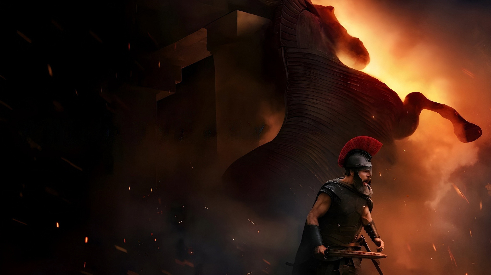

La Odisea
Películas más vistas
Ver todoTOPPELÍCULASHOY
PELÍCULAS
HOY
TOPSERIESHOY
SERIES
HOY
Series de Netflix
Ver todoSeries mejores valoradas
Ver todoPelículas coreanas
Ver todo
6.7
El día de la revelación
PELÍCULA
6.7
2026
Si descubrieras que no estamos solos, si alguien te abriera los ojos y te lo demostrase, ¿te asustarías?
Películas de comedia
Ver todoPelículas de acción
Ver todoPelículas románticas
Ver todoPelículas de terror
Ver todoPelículas de aventuras
Ver todoPelículas de fantasía
Ver todoPelículas de historia
Ver todoPelículas de música
Ver todoPelículas de misterio
Ver todoPelículas de guerra
Ver todo
8.4
La casa del dragón
SERIE
8.4
2022
Basada en el libro 'Fuego y Sangre' de George R.R. Martin. La serie se centra en la casa Targaryen, trescientos años antes de los eventos vistos en 'Juego de Tronos'.